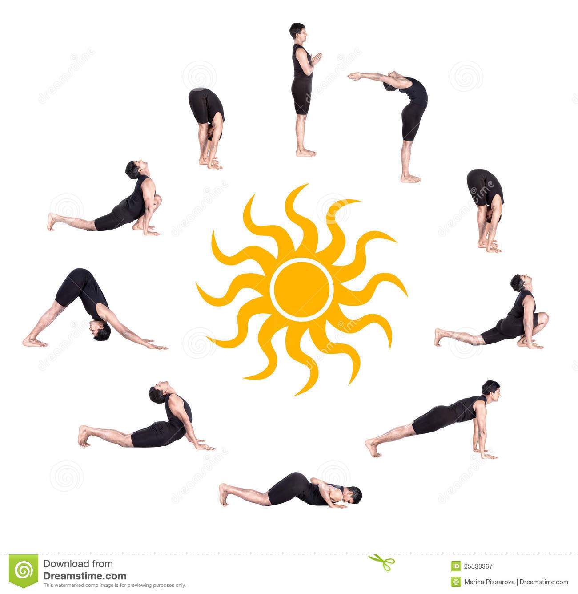

Yoga is a type of exercise in which you move your body into various positions in order to become more fit or flexible, to improve your breathing, and to relax your mind
1.Diabetes
-->Sun Salutations (Surya Namaskar)
-->Lying Down Body Twist (Folded leg Lumbar stretch)

-->Bow Pose (Dhanurasana)

-->Seated-forward Bend (Paschimottanasana)

-->Legs up the wall (Viparita Karani)

-->Bhujangasana (Upward Facing Dog Pose)
-->Corpse Pose (Shavasana)

2.Cancer
-->Tree Pose (Vrikshasana)

-->Marjariasana

-->Thunderbolt pose (Vajrasana)

-->Alternate Nostril Breathing (Pranayama)

3.Arthritis
-->Warrior pose (Virabhadrasana)

-->Tree Pose (Vrikshasana )
-->Triangle Pose (Trikonasana)

-->Bridge Pose (Setubandhasana )

4.Heart disease
-->Extended triangle pose (Utthita Trikonasana)

-->Seated forward bend pose (Paschimottanasana )
-->Half spinal twist pose (Ardha matsyendrasana)

-->Cow face pose (Gomukhasana)

-->Bridge pose (Setu Bandhasana)